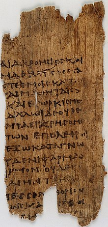

I swear by Apollo Healer, by Asclepius, by Hygieia, by Panacea, and by all
the gods and goddesses, making them my witnesses, that I will carry out,
according to my ability and judgment, this oath and this indenture.
To hold my teacher in this art equal to my own parents; to make him partner
in my livelihood; when he is in need of money to share mine with him; to
consider his family as my own brothers, and to teach them this art,
if they want to learn it, without fee or indenture; to impart precept,
oral instruction, and all other instruction to my own sons, the sons of my teacher,
and to indentured pupils who have taken the Healer’s oath, but to nobody else.
I will use those dietary regimens which will benefit my patients according to my
greatest ability and judgment, and I will do no harm or injustice to them.
Neither will I administer a poison to anybody when asked to do so, nor will I
suggest such a course. Similarly I will not give to a woman a pessary to cause abortion.
But I will keep pure and holy both my life and my art. I will not use the knife,
not even, verily, on sufferers from stone, but I will give place to such as are
craftsmen therein.
Into whatsoever houses I enter, I will enter to help the sick, and I will abstain
from all intentional wrong-doing and harm, especially from abusing the bodies
of man or woman, bond or free. And whatsoever I shall see or hear in the course of
my profession, as well as outside my profession in my intercourse with men, if it
be what should not be published abroad, I will never divulge, holding such things to
be holy secrets.
Now if I carry out this oath, and break it not, may I gain for ever reputation among
all men for my life and for my art; but if I break it and forswear myself,
may the opposite befall me.

A fragment of the oath on the 3rd-century Papyrus Oxyrhynchus 2547.
Hahnemannian Oath
"On my honour I swear that I shall practise the teachings of Homoeopathy,
perform my duty, render justice to my patients and help the sick whosoever
comes to me for treatment.
May the teachings of master Hahnemann inspire me and may I have the
strength for fulfilment of my mission."
Hahnemannian Law
Character of Medical Practitioner
The primary object of the medical profession is to render service to humanity
with full respect for the dignity of man; financial reward is a subordinate
consideration. Whosoever chooses this profession assumes the obligation to
conduct himself in accordance with its ideals. A practitioner of Homoeopathy
shall be an upright man, instructed in the art of healing. He shall keep
himself pure in character and be diligent in caring for the sick.
He shall be modest, sober, patient and prompt and do his duty without anxiety,
and shall be pious and conduct himself with propriety in his profession and in
all the actions of his life.
Standards of Character and Morals
The medical profession expects from its members the highest level of
character and morals, and every practitioner of Homoeopathy owes to
the profession and to the public alike a duty to attain such a level.
It shall be incumbent on a practitioner of Homoeopathy to be temperate
in all matters, for the practice of medicine requires unremitting
exercise of a clear and vigorous mind.